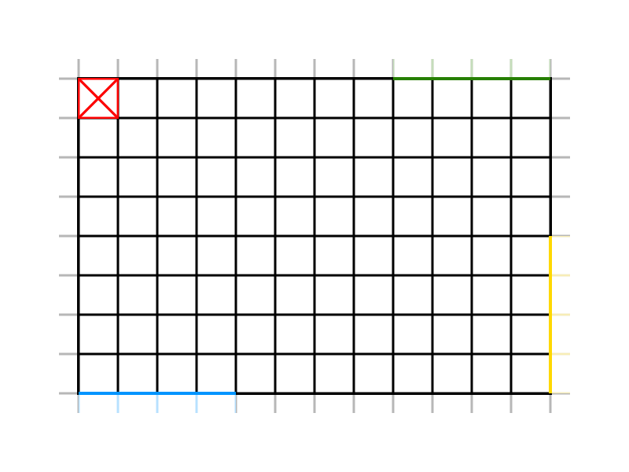

Problem Analysis
Service Area
Problem: we need a proper representation of the service area to optimally move and monitor the transport trolley.Solution:
Reasons:
- Since the HOME is the top-left corner, it's more intuitive to represent it as the first element of the matrix, which is the [0,0] element.
- We can associate a cartesian coordinate system to the matrix with the origin in the top-left corner and RD as unit. That might make things easier later on, if we will need to implement a graphical representation of the transport trolley state (for example in WasteServiceStatusGUI). This because almost every software, library, framework or API, start drawing from the top-left corner to the bottom-right one.



Show the legend
Show the coordinate system
Relevant Positions
The matrix size of rows and columns depend on RD (which is the size of the DDR robot), therefore for the moment we assume that they are respectively N (row size, x axis) and M (column size, y axis).
The relevant positions are:
- [0,0] =
HOME - from [0,M] to [4,M] =
INDOOR - from [N,0] to [N,4] =
GLASSBOX - from [N,M-4] to [N,M] =
PLASTICBOX
Requirements Formalization
Entities
| Entity | Activity | Type | Description/Behaviour |
|---|---|---|---|
| Waste truck | Reactive¹ | Generic Entity | Entity that approaches the INDOOR of the service area to dump some WasteLoad. It's represented as a generic entity, since it's not part of the system, but will be later implemented as an actor (as well as the driver, to send dummy requests) for testing/simulation purposes only. |
| Truck driver | Proactive² | Generic Entity | Human entity, external to the system, that drives the waste truck and sends store requests. |
| WasteService | Proactive & Reactive | Actor | Handles the waste trucks requests and manages the transport trolley actions. |
| DDR robot | Reactive | POJO | Entity which executes the commands received by the transport trolley through a special interface provided by the customer. |
| Transport trolley | Proactive & Reactive | Actor | Main entity of the WasteService system, which performs the deposit actions. |
| WasteService- StatusGUI |
Reactive | Generic Entity | Entity that receives data and updates a GUI, used to monitor the status of the service area. |
| Supervisor | Reactive | Generic Entity | Human entity, external to the system, that monitors the state of the service area. |
| Alarm device | Proactive | Actor | Entity, which is part of a smart device, that sends a message to the WasteService when it detects the presence of an obstacle. |
| Warning device | Reactive | POJO | Entity, which is part of a smart device, that receives information about the current state of the transport trolley, and behave differently according to its movement. |
Notes
- Proactive: entity which creates or controls a situation rather than just responding passively after it has happened.
- Reactive: entity which acts in response to a situation rather than creating or controlling it.
Data
| Data | Type | Description |
|---|---|---|
| TruckLoad | Floating Point Variable |
Indicates the weight of the waste that the truck wants to dump.
Since the weight is expressed in kg, we have to use decimal too.
val truckLoad : Float
|
| WasteLoad | Floating Point Variable |
Indicates the weight of waste that the transport trolley is going to deposit.
val wasteLoad : Float
|
| WasteType | Enumerative |
Indicates the type of waste to deposit.
enum class WasteType { PLASTIC, GLASS }
|
| PICKUP_TIME | Integer Constant |
Time in seconds, known in advance, it takes the transport trolley to pick up the waste.
const val PICKUP_TIME : Int
|
| MAXPB | Floating Point Constant |
Maximum waste capacity that the PlasticBox can store.
const val MAXPB : Float
|
| MAXGB | Floating Point Constant |
Maximum waste capacity that the GlassBox can store.
const val MAXGB : Float
|
| RD | Integer Constant |
Length of the transport trolley.
const val RD : Int
|
| DLIMT | Floating Point Constant |
Limit distance beyond which the alarm is activated.
const val DLIMT : Float
|
Messages
| Message | Type | Description |
|---|---|---|
| Store the load | Request | Message sent from the truck driver to the WasteService through a smart device, to ask if it can dump TruckLoad kg of waste. |
| LoadAccept | Response | Message received from the WasteService, that means there is enough space for the waste to be deposited. Once this message is received, the truck waits T seconds (prefixed pickup time), then it leaves and frees the INDOOR. |
| LoadRejected | Response | Message received from the WasteService, that means there is NOT enough space for the waste to be deposited. When the truck receives this messages, it leaves and freed the INDOOR immediately. |
| Start | Dispatch | Message the user of WasteService can send to the system, to initialize it. |
| Stop | Dispatch | Alarm message, sent from the RaspberryPi to the WasteService, to stop the transport trolley activity. |
| Resume | Dispatch | Message, sent from the RaspberryPi to the WasteService, to resume the transport trolley activity. |
Models
Why QAK
Problem: we need to fill the abstraction gap related to the concept of service.Solution:
Reasons:
- It's was implemented entirely created whitin our software house, which makes it easier to get information and support from the actual creator of the language.
- It allows you to create executable models, directly from the language. It provides a way to represent concepts related to services, such as request, response, dispatch, etc.; while other general-purpose languages would need external libraries (e.g. Java would need some kind of JAR to implement Actors), frameworks or resources to do the same.
- It provides an easy way to implement runnable test models which capture the salient concepts of the requirements or problems.
- Our software house already has some project and components we could exploit and use.
QAK documentation
QAK is a custom (meta)modeling language documentation